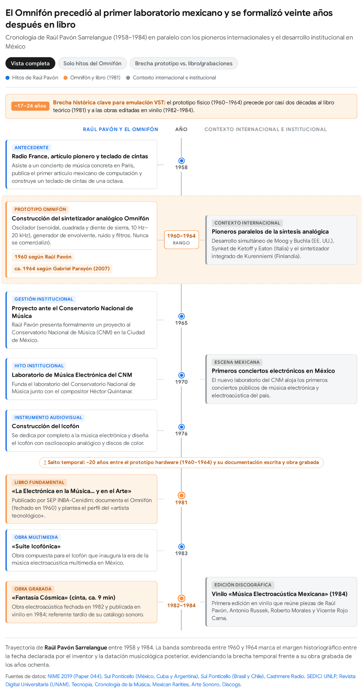
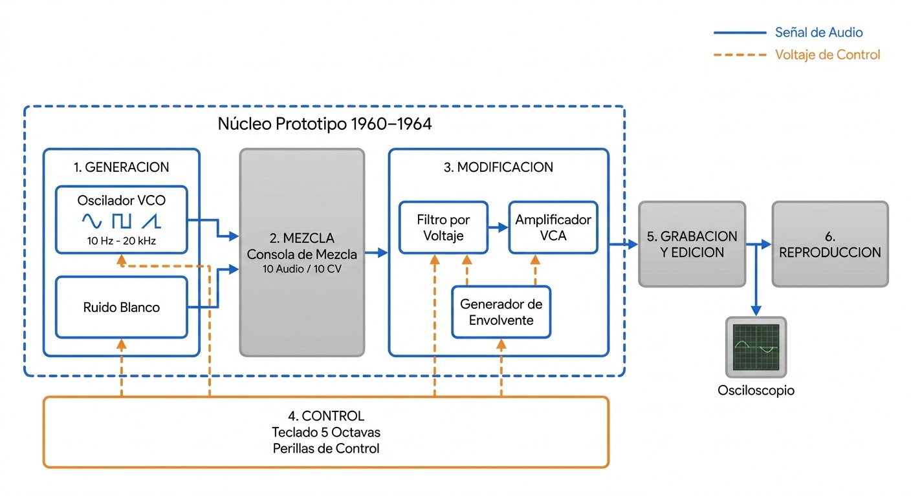
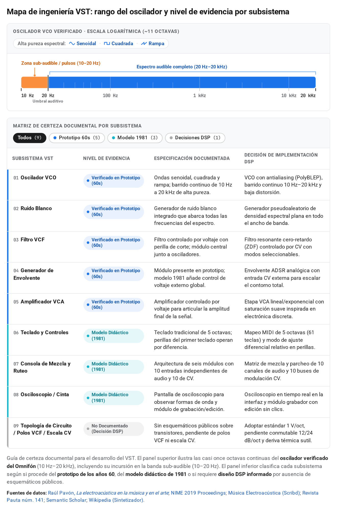

El Omnifón de Raúl Pavón Sarrelangue: investigación histórica y especificación técnica para su emulación en VST
Desarrollar una versión virtual en formato VST del Omnifón exige resolver desde el inicio un hallazgo documental decisivo: bajo ese nombre coexisten en el registro histórico dos realidades complementarias concebidas por el ingeniero y compositor mexicano Raúl Pavón Sarrelangue. La primera es un prototipo físico analógico controlado por voltaje construido a principios de la década de 1960 (fechado en 1960 por el propio autor y hacia 1964 por la musicología posterior), reconocido como el primer sintetizador desarrollado en México y uno de los primeros instrumentos controlados por voltaje en el mundo1. La segunda es el «sintetizador ideal — omnifón», una arquitectura didáctica modular dividida en seis grandes subsistemas funcionales que Pavón sistematizó veinte años después en el Capítulo IV (pp. 163–209) de su libro La Electrónica en la Música… y en el Arte (1981)66.
Desde la ingeniería de audio (DSP), el proyecto debe plantearse con transparencia metodológica como una reconstrucción históricamente informada y no como un clonado a nivel de circuito eléctrico. Aunque el archivo PDF completo de 94.09 MB alojado en el repositorio de INBA Digital (384paglibElect.pdf) no resultó accesible para su descarga e inspección gráfica directa9, el análisis textual del Capítulo IV de esa misma edición confirma que el libro documenta diagramas de bloques, paneles de control, fotografías históricas y esquemas de interconexión («alambrado») —entre las Figuras IV.2 y IV.38—, más que esquemáticos electrónicos a nivel de componentes discretos o valores de transistores6. Asimismo, no existen mediciones de laboratorio ni una grabación aislada y certificada del hardware original de los años sesenta. Sin embargo, los testimonios escritos del propio Pavón, el catálogo completo de módulos del Capítulo IV y la documentación musicológica permiten establecer con claridad tanto el núcleo sustractivo original (oscilador de 10 Hz a 20 kHz de alta pureza en ondas senoidal, cuadrada y rampa) como el ecosistema modular expandido de 1981 (oscilador de cuatro ondas con pulso, ruido blanco y rosa, controladores continuos, secuenciador de 10 pasos, banco de filtros, modulador anular, reverberador y envolventes exponenciales), bases suficientes para diseñar un instrumento virtual coherente, fiel a su filosofía técnica y musicalmente distintivo66.
Historia y contexto tecnológico del Omnifón
Raúl Pavón Sarrelangue y el origen del prototipo
La concepción del Omnifón refleja la formación dual de Raúl Pavón Sarrelangue —cuyo año de nacimiento varía entre 1927, 1928 y 1930 según distintas fuentes biográficas, fallecido en 20081—. Pavón articuló una carrera en ingeniería eléctrica y computación (citado en distintas fuentes como ingeniero de la Mexican Light and Power Co. y de la CFE, y autor en 1958 del primer artículo mexicano sobre computación presentado en un congreso nacional estadounidense) con una formación musical que, según reseñas biográficas enciclopédicas, abarcó estudios de guitarra con Andrés Segovia y de música electroacústica en Milán y Colonia14. Esta trayectoria explica por qué, décadas después, describiría el surgimiento en los años sesenta de «una generación híbrida de científicos-artistas»17.
El detonante creativo tuvo lugar en 1958, cuando Pavón asistió a un concierto de música concreta en Radio France, en París1. Convencido de que el desarrollo musical debía aprovechar los recursos de la electrónica, construyó primero un prototipo de instrumento de una octava en el que cada nota activaba la reproducción de un bucle (loop) de cinta magnética11. Al tramitar la patente descubrió que ese principio ya había sido patentado y empleado en varios instrumentos, con similitudes respecto al Multiórgano del compositor cubano Juan Blanco6.
La construcción del Omnifón y el debate sobre su fechamiento (1960 vs. 1964)
Tras descartar la patente del teclado de cintas, Pavón diseñó y construyó su sintetizador analógico controlado por voltaje, el Omnifón4. En la literatura existen dos dataciones principales que conviene consignar en la documentación del plugin: el propio Pavón señala 1960 como el año de creación en su libro de 1981 —fecha retomada por historiadores como Ricardo Dal Farra y diversas cronologías de la electroacústica mexicana1—, mientras que el musicólogo Gabriel Pareyón, en el Diccionario Enciclopédico de Música en México (Vol. 2, Universidad Panamericana, 2007), ubica su desarrollo hacia 1964, fecha también adoptada por reseñas radiofónicas y de divulgación posteriores2. Cualquiera que haya sido el año exacto de conclusión del prototipo, su relevancia internacional es notable: nació en paralelo e independientemente de los sintetizadores controlados por voltaje de Robert Moog y Donald Buchla en Estados Unidos, el Synket de Paolo Ketoff y John Eaton en Italia y el Integrated Synthesizer de Erkki Kurenniemi en Finlandia6.

Destino comercial, legado institucional y deslinde de otros desarrollos
A diferencia de los equipos estadounidenses y europeos que consolidaron una industria comercial, el Omnifón nunca se fabricó en serie. Pavón ofreció su producción a diversas empresas mexicanas de equipo electrónico sin obtener interés, lo que lo llevó a calificarlo como «una industria que murió sin haber nacido, por obra y gracia de nuestra tradicional apatía e indiferencia»7. En su libro relató cómo su teclado electrónico «volvió a su mudez primitiva, ante las voces potentes de Moog, Buchla, EMS…», ironizando incluso sobre si existiría «algún otro ingeniero más fracasado que yo, con instrumentos más antiguos»18. El aparato quedó así confinado al uso personal y demostrativo23.
No obstante, el impulso pedagógico e institucional de Pavón resultó decisivo para la música electrónica en México. En 1965 presentó un proyecto al Conservatorio Nacional de Música (CNM) y, en 1970, fundó junto al compositor Héctor Quintanar —con el respaldo de Carlos Chávez y apoyos privados— el Laboratorio de Música Electrónica del CNM, el primero del país24. Allí supervisó la compra del equipamiento inicial (cuyo eje era un sintetizador modular Moog acompañado de magnetófonos) e impartió talleres de electrónica musical a una generación clave de compositores mexicanos1.
Al proyectar la emulación en VST es indispensable no mezclar el Omnifón con otros dos desarrollos distintos de Pavón. Por un lado, el ingeniero construyó aparte un filtro polifónico por octavas y tercios de octava controlado desde un teclado musical y basado en un filtro de la firma danesa Brüel & Kjaer2. Por otro, en 1976 desarrolló el Icofón, un instrumento audiovisual que traducía el sonido electrónico en imágenes mediante un osciloscopio analógico y discos giratorios con filtros de color inspirados en la televisión temprana, con el cual ofreció conciertos en 1980 y compuso la Suite Icofónica (1983)11. Algunos testimonios orales retrospectivos —como una entrevista al compositor Hugo Rosales en 2012— fusionan el recuerdo del Omnifón con la pantalla del Icofón32; aunque Pavón utilizaba osciloscopios para observar ondas sonoras6, se trata de aparatos histórica y funcionalmente separados.
Arquitectura: del prototipo físico al «sintetizador ideal» del Capítulo IV (pp. 163–209)
La clave arquitectónica para diseñar el VST consiste en diferenciar con claridad las dos formulaciones documentadas bajo el nombre Omnifón. En las fuentes académicas, el prototipo físico de los años sesenta se describe como un sintetizador analógico controlado por voltaje4 —calificado como «semimodular» en reseñas radiofónicas recientes como Cashmere Radio20— de topología sustractiva clásica. Su cadena de señal reunía una etapa de generación compuesta por un oscilador controlado por voltaje (con ondas senoidal, cuadrada y rampa) y un generador de ruido blanco; una etapa de modelado tímbrico y dinámico conformada por filtros tímbricos (incluido filtrado por voltaje), un generador de envolvente y un amplificador controlado por voltaje (VCA); además de un teclado electrónico y otras facilidades auxiliares1.
Dos décadas después, en el Capítulo IV de La Electrónica en la Música… y en el Arte (pp. 163–209), Pavón dedica la sección introductoria (pp. 163–169) a explicar el tránsito hacia el sintetizador controlado por voltaje —ilustrando los sistemas de Moog y Buchla (Figura IV.2), la relación voltaje-frecuencia, tres tipos de pulsos de control (Figura IV.4), la producción de una nota mediante voltajes de control (Figura IV.5) y la envolvente para pulsos de distintos porcentajes de control (Figura IV.6)— antes de presentar sus propios antecedentes históricos (Figuras IV.7 y IV.8)6. A partir de la página 170 expone el «sintetizador ideal — omnifón», concebido con fines didácticos para reunir de manera sistemática todos los elementos de un estudio electroacústico modular6.

Inventario modular completo del Capítulo IV (seis grupos funcionales)
Según la estructura del libro (pp. 170–204) y el análisis publicado en Pauta (núm. 141), el Omnifón didáctico se divide en seis grupos funcionales (Generación, Mezcla, Control, Modificación, Grabación y edición, y Reproducción)8. Cada módulo sigue una ficha técnica estandarizada (Nombre, Grupo, Función, Entradas, Salidas, Controles, Conexiones y Variaciones comerciales)6. A continuación se consolida el inventario de módulos y figuras recuperados del Capítulo IV:
Grupo funcional | Módulo (nomenclatura original de Pavón) | Figura en Cap. IV | Función, entradas/salidas y controles documentados |
|---|---|---|---|
1. Generación | Oscilador | Fig. IV.96 | Generador de cuatro ondas básicas (senoidal, triangular, rampa y cuadrada convertible a pulso), con salidas individuales por forma de onda6. |
1. Generación | Ruidor | — | Generador de ruido en sus dos calidades: blanco y rosa6. |
2. Mezcla | Mezclador M (manual) | — | Combina manualmente hasta diez sonidos; consola con 10 entradas independientes para audio y diez entradas adicionales de control6. |
2. Mezcla | Mezclador V | — | Mezclador controlado por voltaje (capaz de recibir voltajes de control, p. ej., desde el secuenciador)6. |
2. Mezcla (auxiliar) | Bloques pasivos de distribución | — | Módulos sin controles frontales («sólo una entrada y un par común de [salidas]»), equivalentes a divisores o multiples pasivos6. |
3. Control | Aleator | Fig. IV.136 | Emisor de voltajes de control aleatorios6. |
3. Control | Extractor de envolvente | Fig. IV.146 | Convierte la amplitud de una señal en voltaje de control; documenta un decaimiento en el voltaje de salida de hasta 5 segundos6. |
3. Control | Testigo (sample and hold) | Fig. IV.176 | Circuito de «prueba y guarda» (sample and hold) con control dedicado para la duración del pulso6. |
3. Control | Banda (banda restirada) | Fig. IV.196 | Control táctil lineal (ribbon controller) que genera voltajes continuos6. |
3. Control | Teclado (teclado tradicional) | Fig. IV.206 | Teclado tradicional de 5 octavas que genera voltajes de control en pasos; variaciones comerciales: independiente, acoplado a secuenciador o con distinto número de teclas6. |
3. Control | Control táctil (múltiple) | — | Superficie táctil que proporciona múltiples voltajes de control por contacto6. |
3. Control | Secuenciador (de 10 pasos) | Fig. IV.226 | Generador secuencial de voltajes de control de 10 pasos, con diez perillas de ajuste por etapa6. |
4. Modificación (grupo más nutrido)6 | Filtro pasabanda | Fig. IV.23 (p. 189)6 | Filtrado pasabanda equipado con atenuador o control de ajuste6. |
4. Modificación | Filtro-O (de octava) | Fig. IV.246 | Banco de filtros que divide la gama audible por octavas6. |
4. Modificación | Filtro-V (Filtro por voltaje) | Fig. IV.25 (p. 191)6 | Filtro controlado por voltaje (con control de ancho y perilla principal para fijar la frecuencia de corte)6. |
4. Modificación | Reverberador | Fig. IV.266 | Procesador espacial para impartir profundidad a la señal6. |
4. Modificación | Modulador anular | Fig. IV.276 | Multiplicador de señales con conexiones siempre en pares (dos señales de entrada)6. |
4. Modificación | Integrador de envolvente | Fig. IV.286 | Acondicionador y suavizador de contornos dinámicos o tímbricos6. |
4. Modificación | Envolvedor (y VCA asociado) | Fig. IV.296 | Procesa el contorno dinámico del audio (con un módulo controlado por voltaje de funcionamiento análogo que amplifica la señal), curva exponencial de ataque/decaimiento y CV externo global6. |
4. Modificación | Modificación de campos | — | Subsistema conceptual/funcional orientado a variar valores de parámetros de nota a nota6. |
5. Grabación y edición | Pre-magnetófono | — | Preamplificador de grabación con control múltiple del magnetófono; Pavón advierte evitar clics en los botones de grabación6. |
5. Grabación y edición | Pre-manual | Fig. IV.336 | Preamplificador manual para amplificar niveles, normalmente conectado a fuentes sonoras externas6. |
6. Reproducción | Preamplificador general | Fig. IV.356 | Centraliza entradas de micrófonos, magnetófonos, tocadiscos y sintetizador en modo control6. |
6. Reproducción | Amplificador y salida | Fig. IV.366 | Etapa de potencia, reproducción, presentación al público y observación en osciloscopio6. |
Síntesis de parcheo | Ejemplo de alambrado | Fig. IV.386 | Cierre del Capítulo IV: esquema completo de interconexión («alambrado en el omnifón») entre teclado, oscilador y módulos de procesamiento6. |
Esta panorámica evidencia una diferencia crucial para la emulación en VST: mientras el prototipo físico (1960–1964) era una unidad sustractiva compacta de tres ondas y ruido blanco1, el Omnifón del Capítulo IV (1981) constituye un sistema modular integral de estudio que abarca desde síntesis sustractiva y modulación en anillo hasta generación aleatoria (Aleator), muestreo y retención (Testigo), seguidores de envolvente (Extractor), controladores expresivos no convencionales (Banda restirada y Control táctil múltiple), secuenciación de 10 pasos y bancos de filtros por octavas6.
Comportamiento técnico, sistema de controles y vacíos documentales
El oscilador (VCO): del prototipo de tres ondas al módulo de cuatro ondas de 1981
El atributo mejor documentado del prototipo original es su oscilador principal, que Pavón describió textualmente como «un oscilador de ondas senoidal, cuadrada y rampa, variables continuamente entre 10 Hz y 20 kHz, y con una pureza de onda que no he visto hasta la fecha en ningún sintetizador comercial»6. Esta especificación define tres rasgos de comportamiento esenciales para el DSP: primero, un barrido continuo de casi once octavas (
Sin embargo, el Capítulo IV del libro introduce una ampliación directa que debe reflejarse en el VST: el módulo Oscilador (Figura IV.9) del Omnifón didáctico de 1981 se define como un generador de cuatro ondas básicas —senoidal, triangular, rampa y cuadrada convertible a pulso—, disponiendo de salidas individuales simultáneas para cada forma de onda6. Asimismo, el módulo Ruidor amplía el ruido blanco del prototipo original añadiendo ruido rosa6.
Filtros, envolventes exponenciales, modulación y controladores expresivos
Pavón otorgó al filtrado un papel estructural equivalente al de la generación al afirmar que «el filtro es tan importante en el omnifón como los [osciladores]»32. En el Capítulo IV desdobla el filtrado en tres módulos complementarios: el Filtro pasabanda (Figura IV.23, p. 189), el Filtro-O de octava (Figura IV.24, que divide todo el espectro audible en bandas de octava, eco directo de sus experimentos con filtros Brüel & Kjaer) y el Filtro-V o filtro por voltaje (Figura IV.25, p. 191, dotado de perilla para fijar el corte y control de ancho)6.
En cuanto a la articulación dinámica y la modulación, el Capítulo IV aporta precisiones clave para programar el motor DSP:
- Curva de envolvente exponencial: Pavón señala expresamente que la curva envolvente en el ataque y en el decaimiento es exponencial y no recta6, confirmando también su papel para evitar ruidos/clics en el arranque y la existencia de control de voltaje externo para el total de la envolvente6.
- Extracción y retención de voltajes: El Extractor de envolvente (Figura IV.14) convierte la amplitud de una señal en CV con un tiempo de decaimiento de salida que alcanza los 5 segundos6, mientras el Testigo (sample and hold, Figura IV.17) permite regular la duración del pulso de muestreo6 y el Aleator (Figura IV.13) inyecta voltajes aleatorios continuos o escalonados6.
- Controladores gestuales y secuenciación: Además del Teclado tradicional de 5 octavas (Figura IV.20) —y las perillas diferenciales vinculadas al primer teclado6—, el Omnifón de 1981 integra dos controladores expresivos de gran valor para el diseño sonoro moderno: la Banda restirada (ribbon controller, Figura IV.19) para barridos continuos sin cuantización6 y el Control táctil múltiple6, acompañados por un Secuenciador de 10 pasos (Figura IV.22) con diez perillas dedicadas6.
- Procesadores de color y espacio: La cadena de modificación se completa con un Modulador anular (Figura IV.27, que opera siempre sobre pares de señales)6, un Integrador de envolvente (Figura IV.28)6, el Envolvedor (Figura IV.29)6 y un Reverberador (Figura IV.26)6.
Vacíos técnicos confirmados
Pese a la riqueza arquitectónica recuperada del Capítulo IV (pp. 163–209), es indispensable mantener el rigor ingenieril respecto a los parámetros de electrónica física que el libro —por su carácter didáctico y de bloques funcionales— no especifica a nivel de circuito:
Parámetro técnico | Estado documental (incluyendo Cap. IV, pp. 163–209) | Criterio para la emulación en VST |
|---|---|---|
Tecnología activa del circuito | No documentada (no se confirma si el prototipo de 1960–1964 usó bulbos/válvulas de vacío, transistores discretos o un esquema híbrido). | Modelar una cadena limpia de precisión por defecto y ofrecer saturación/deriva solo como control opcional. |
Escala exacta de voltaje (CV) | Se confirma polaridad directa (mayor frecuencia = mayor voltaje)6, pero no la constante exacta (1 V/oct frente a Hz/V ni el rango exacto en voltios). | Emplear escalado logarítmico interno (equivalente a 1 V/oct para el teclado) con opción de barrido libre continuo y banda táctil lineal. |
Topología interna del Filtro-V | Confirmados tres módulos de filtro (pasabanda, octava y por voltaje)6, pero sin esquemático de circuito (orden/pendiente en dB/oct o umbral de auto-oscilación). | Implementar un filtro ZDF multimodo limpio (12 y 24 dB/oct) para el Filtro-V, más un pasabanda dedicado y un banco fijo por octavas (Filtro-O). |
Etapas de la envolvente | Confirmados curva exponencial en ataque/decaimiento, arranque sin clic y CV externo global6, más la relación entre Envolvedor e Integrador6. | Proveer ADSR exponencial completo (con modo AR simplificado), entrada CV externa global y etapa de suavizado/integración. |
Polifonía del prototipo | No declarada explícitamente; la mención en singular de «un oscilador»1 y el contraste con su filtro polifónico posterior apuntan a un instrumento monofónico. | Configurar el modo histórico en monofónico por defecto y habilitar polifonía opcional para comodidad en DAW. |
Inspección visual directa del PDF de INBA Digital | El PDF íntegro (384paglibElect.pdf, 94.09 MB) no pudo descargarse directamente para leer los rótulos gráficos impresos dentro de cada dibujo9. | Validar los rótulos exactos de cada perilla y el ruteo completo de la Fig. IV.38 al descargar localmente el archivo antes de congelar el diseño final de la GUI. |
Cómo se veía: evidencia fotográfica, figuras del Capítulo IV y criterios GUI
El diseño gráfico del VST cuenta con un corpus visual mucho más rico del que suele suponerse, distribuido entre fotografías del prototipo físico de los años sesenta y la secuencia de ilustraciones técnicas del Capítulo IV de La Electrónica en la Música… y en el Arte (pp. 163–209):
1. Fotografías históricas del prototipo físico
- Figura IV.7 de La Electrónica en la Música… y en el Arte (1981): Titulada «Generadores del "Omnifón" de los años 60», es la referencia primaria publicada por el propio Pavón sobre su hardware original, seguida de la Figura IV.8 («El primer estudio de música electrónica en México»)6.
- Fotografía «The Omnifón» (Figura 2 del artículo NIME 2019): Publicada por Martín Matus Lerner en las memorias de NIME 2019 (nime2019_paper044.pdf), muestra la unidad física y el panel frontal construido por Raúl Pavón6.
- Fotografía en la tesis doctoral de Ricardo Dal Farra (Figura 23): Archivada en la Université du Québec à Montréal (archipel.uqam.ca/2062/1/D1367.pdf) con el pie «Analog synthesizer developed by Raul Pavon during the early 60s in Mexico», junto a una imagen del primer laboratorio de música electrónica mexicano (Figura 24) y la portada del libro de 1981 (Figura 25)33.
- Imagen de archivo en Sul Ponticello y Cashmere Radio: Reproducida en el dossier sobre lutería electrónica en Cuba, México y Argentina y enlazada por Cashmere Radio (069_prisma_diispositivos-sonoros-experimentales_img04.jpg).
2. Índice de diagramas y paneles del Capítulo IV (pp. 163–209) para el diseño GUI
Para estructurar el panel modular del Modo Ideal (1981), el desarrollador debe tomar como plano maestro la secuencia gráfica del Capítulo IV recuperada de la edición de 1981:
- Fundamentos de control por voltaje (pp. 163–169): Fig. IV.2 (Moog y Buchla), Fig. IV.4 (tres tipos de pulsos de control), Fig. IV.5 (producción de una nota mediante CV) y Fig. IV.6 (envolvente para pulsos de diversos porcentajes de control)6.
- Paneles de Generación y Control: Fig. IV.9 (Oscilador de cuatro ondas con salidas individuales), Fig. IV.13 (Aleator), Fig. IV.14 (Extractor de envolvente), Fig. IV.17 (Testigo / S&H), Fig. IV.19 (Banda restirada), Fig. IV.20 (Teclado tradicional de 5 octavas y controles) y Fig. IV.22 (Secuenciador de 10 pasos)6.
- Paneles de Modificación, Grabación y Reproducción: Fig. IV.23 (Filtro pasabanda, p. 189), Fig. IV.24 (Filtro de octava), Fig. IV.25 (Filtro por voltaje, p. 191), Fig. IV.26 (Reverberador), Fig. IV.27 (Modulador anular), Fig. IV.28 (Integrador de envolvente), Fig. IV.29 (Envolvedor), Fig. IV.33 (Pre-manual), Fig. IV.35 (Preamplificador general) y Fig. IV.36 (Amplificador)6.
- Esquema maestro de parcheo: Figura IV.38 («Un ejemplo del alambrado en el omnifón»), que cierra el capítulo mostrando cómo se cablean físicamente los módulos entre sí6 y constituye el modelo ideal para el preset de inicialización (Init Patch) del VST.
En términos estéticos, conviene despejar el malentendido ya señalado de la «pantalla integrada»: aunque Hugo Rosales recordó el aparato con pantalla de ondas y describió a Pavón «soldando cables, armando instrumentos gigantes»23, ese componente visual corresponde propiamente al Icofón de 19766. Sin embargo, dado que Pavón integraba la observación en osciloscopio dentro de su pedagogía electroacústica32, una interfaz VST de estética de instrumentación electrónica de laboratorio de los años sesenta —con rotulación original en español (Oscilador, Ruidor, Aleator, Testigo, Banda, Filtro-O, Filtro-V, Modulador anular, Envolvedor), diales graduados de 10 Hz a 20 kHz y una ventana de osciloscopio monocromático con un modo cromático opcional claramente etiquetado como homenaje al Icofón— resulta históricamente honesta y visualmente memorable.
Cómo sonaba: carácter tímbrico y auditoría de grabaciones
Al no conservarse muestras secas certificadas del prototipo de los años sesenta, el perfil sonoro del Omnifón debe reconstruirse a partir de sus especificaciones y su contexto estético. Dos rasgos dominan esa deducción tímbrica. En primer lugar, la precisión espectral de laboratorio: a diferencia del estereotipo posterior del sintetizador analógico denso y saturado, Pavón reivindicaba la pureza excepcional de sus formas de onda32, en sintonía con la estética de la música electrónica de estudio europea de Milán y Colonia14. En segundo lugar, la continuidad de registro y el gesto electroacústico: la capacidad de barrer sin interrupción desde 10 Hz hasta 20 kHz, combinar ondas puras con ruido blanco y rosa, moldear el espectro mediante filtrado por voltaje o por bandas de octava, introducir inarmonicidad con el modulador anular y generar patrones aleatorios o de sample and hold (Aleator / Testigo) permite transitar desde pulsos infrasónicos y tonos sinusoidales puros hasta gestos microtonales con banda táctil, percusiones de ruido y texturas electroacústicas complejas66.
En cuanto al material grabado disponible, la pieza más difundida de Raúl Pavón es Fantasía Cósmica (9:10–9:16), editada originalmente en 1984 en el vinilo Música Electroacústica Mexicana junto a obras de Antonio Russek, Roberto Morales y Vicente Rojo Cama, y posteriormente remasterizada con la participación de la Fonoteca Nacional27. Aunque programas radiofónicos como Cashmere Radio asocian esta obra con el Omnifón al abrir con ella su emisión dedicada al sintetizador, es imprescindible mantener rigor cronológico: Fantasía Cósmica fue realizada entre 1982 y 198427, unas dos décadas después del prototipo original, cuando Pavón ya había trabajado extensamente con el sintetizador modular Moog y los magnetófonos del Laboratorio del CNM, además de otros sintetizadores comerciales1. Las fuentes no acreditan que la pieza haya sido grabada con el Omnifón; por ello debe utilizarse como referencia del lenguaje compositivo y espacial de Pavón, pero no como registro acústico directo del hardware de los años sesenta.
Documentación técnica y hoja de ruta para construir el VST
Antes de escribir código en frameworks de audio como JUCE/C++, FAUST o iPlug2 (o de prototipar en Max/MSP, Pure Data o SuperCollider), resulta fundamental separar qué parámetros del plugin obedecen a restricciones documentadas del prototipo, cuáles derivan del catálogo modular del Capítulo IV (pp. 163–209) y cuáles corresponden a decisiones de ingeniería DSP que suplen la falta de esquemáticos electrónicos.

Diseño de producto: arquitectura en «Modo Dual»
La solución más sólida para honrar ambas etapas del Omnifón sin sacrificar claridad consiste en dotar al VST de un conmutador de arquitectura de dos modos:
- Modo Prototipo (1960–1964): Expone únicamente la cadena sustractiva monofónica esencial documentada para el hardware original —VCO de rango completo (10 Hz–20 kHz) con tres ondas puras (senoidal, cuadrada y rampa), ruido blanco, filtro por voltaje, generador de envolvente exponencial, VCA y teclado—, optimizada para la inmediatez pedagógica y experimental16.
- Modo Ideal / Estudio (Capítulo IV, 1981): Despliega la arquitectura completa de seis grupos del libro8, habilitando el Oscilador de cuatro ondas (con triangular, ancho de pulso y salidas simultáneas), el Ruidor blanco/rosa, los Mezcladores M y V (10 canales de audio + 10 buses CV + multiples pasivos), la sección completa de Control (Aleator, Testigo S&H, Extractor de envolvente, Banda restirada, Control táctil y Secuenciador de 10 pasos), el banco ampliado de Modificación (Filtro pasabanda, Filtro-O de octava, Filtro-V, Modulador anular, Reverberador, Integrador de envolvente y Envolvedor con CV externo global), el Pre-manual para procesar audio externo (sidechain), el Pre-magnetófono / módulo de cinta sin clics y el parche inicial inspirado en la Figura IV.386.
Especificación DSP módulo por módulo
La siguiente matriz reúne los controles, rangos y criterios algorítmicos recomendados para implementar el motor de síntesis (VST3 / AU / CLAP), incorporando los módulos recuperados del Capítulo IV:
Módulo VST | Parámetros y controles | Rangos y comportamiento | Recomendación de implementación DSP | Base histórica |
|---|---|---|---|---|
Oscilador (VCO) | Frecuencia continua; Afinación fina; Salidas simultáneas por onda; Ancho de pulso (en Modo 1981); Seguimiento de teclado (on/off); FM/CV. | 10 Hz–20 kHz continuo (logarítmico). Modo 1960: Senoidal, Cuadrada y Rampa. Modo 1981: + Triangular y Cuadrada convertible a pulso. | Senoidal en doble precisión (double); Cuadrada/Pulso, Triangular y Rampa con PolyBLEP/DPW y sobremuestreo 2×/4× para garantizar la «pureza de onda» sin aliasing hasta 20 kHz. | Prototipo 60s1; Oscilador Fig. IV.96. |
Ruidor | Salida de ruido blanco; Salida de ruido rosa (Modo 1981); Ruteo a filtro o a matriz CV. | Blanco (espectro plano) y rosa (-3 dB/oct). | PRNG de alta calidad (Xoshiro256) + filtro de Paul Kellet de 3–6 polos para aproximar la pendiente exacta de -3 dB/oct del ruido rosa. | Prototipo (blanco)6; Ruidor Cap. IV (blanco y rosa)6. |
Banco de Filtros (Modificación) | Filtro-V (Corte, Ancho/Q, CV); Filtro pasabanda (Frecuencia, Atenuador); Filtro-O (banco fijo por octavas de 31.5 Hz a 16 kHz). | 20 Hz–20 kHz logarítmico; Filtro-V con 12/24 dB/oct; Filtro-O con bandas de octava independientes. | ZDF-SVF limpio para Filtro-V y Pasabanda (sin saturación agresiva por defecto); banco paralelo de filtros bicuadráticos/SVF paso banda de 1 octava de ancho para Filtro-O. | Fig. IV.23, IV.24 y IV.256. |
Modulador anular y Reverberador | Modulador anular: Entradas A y B (siempre en pares) + mezcla; Reverberador: Profundidad/tiempo, amortiguación y mezcla. | Multiplicación bipolar de dos señales a tasa de audio; reverberación algorítmica de estudio. | Multiplicador limpio en punto flotante con sobremuestreo 2× (evita aliasing en bandas laterales); red de retardo con realimentación (FDN) o emulación de placas/resortes de estudio. | Fig. IV.26 y IV.276. |
Envolvedor, Integrador y VCA | Ataque, Decaimiento, Sostenimiento, Relajación; CV externo de escala global; Integrador (slew limiter); Polarización VCA (Drone). | 1 ms a 10 s con curvas exponenciales; rampa anti-clic de arranque (0.5–2 ms); VCA de -∞ a 0 dB. | Modelado RC exponencial por tramos (honrando la especificación no lineal de Pavón) + filtro paso bajo unipolar para el Integrador de envolvente + multiplicador VCA limpio. | Fig. IV.28 y IV.29; curva exponencial y CV global6. |
Controladores avanzados (Modo 1981) | Aleator (tasa/amplitud); Testigo S&H (duración del pulso, fuente); Extractor de envolvente (decaimiento hasta 5 s); Secuenciador (10 pasos × 10 perillas). | CV bipolar (-1.0 a +1.0) y unipolar (0 a +1.0) a tasa de audio; decaimiento del Extractor de 10 ms a 5 s. | Rectificador de onda completa + filtro de seguimiento RC hasta 5 s para el Extractor; circuito Sample & Hold disparado por reloj con ancho de pulso variable; secuenciador de 10 pasos sincronizable al tempo del DAW. | Fig. IV.13, IV.14, IV.17 y IV.226. |
Consola de Mezcla (M y V) y Ruteo | Mezclador M (10 canales manuales de audio); Mezclador V (ganancia por CV); 10 buses CV + multiples pasivos + esquema de parcheo (Fig. IV.38). | Suma de audio a 32/64-bit float; matriz de cableado libre con protección de bucles de realimentación de 1 muestra. | Cálculo de modulación muestra a muestra (audio-rate CV) para que el VCO, el Aleator o el Extractor modulen cualquier parámetro sin escalonamiento. | Mezcladores M y V, consola y Fig. IV.386. |
Teclado, Banda y Control táctil | Teclado virtual de 5 octavas (61 teclas, C1–C6) + perillas diferenciales; Banda restirada (deslizador lineal continuo); Control táctil múltiple (pads X/Y/presión). | MIDI estándar + MPE / pitch bend extendido; modo «frecuencia libre» desconectada del teclado; Monofónico / Polifónico opcional. | Interpolar suavemente los gestos de la Banda restirada y el Control táctil para lograr glissandos continuos de 10 Hz a 20 kHz sin saltos audibles. | Fig. IV.19 y IV.20; Control táctil múltiple6. |
Grabación, Preamp y Reproducción | Pre-manual (entrada de audio externa/sidechain); Pre-magnetófono (grabador/bucle sin clics); Preamplificador general, Amplificador y Osciloscopio. | Crossfade de 5–10 ms en botones de grabación/bucle; disparo del osciloscopio por cruce por cero; modo cromático opcional (Icofón). | Búfer circular lock-free del hilo DSP a la GUI; entrada sidechain hacia el Extractor de envolvente, Filtro-O o Modulador anular; limitador suave de protección en salida. | Fig. IV.33, IV.35 y IV.36; Pre-magnetófono y osciloscopio6. |
Tres principios de programación cierran la fidelidad de esta arquitectura. Primero, modulación a tasa de audio (audio-rate CV): al calcular las modulaciones muestra a muestra en lugar de por bloques de control, el oscilador puede operar como modulador sub-audible entre 10 y 20 Hz o alimentar el modulador anular y la modulación de frecuencia dentro del rango audible. Segundo, pureza espectral como línea base: en lugar de imponer suciedad analógica obligatoria que contradiga el testimonio de Pavón32, cualquier deriva térmica, ruido de fondo o saturación de salida debe vivir en un parámetro opcional de «Tolerancia analógica» inicializado en 0 %. Tercero, nomenclatura original en español: conservar las etiquetas exactas del Capítulo IV (Oscilador, Ruidor, Mezclador M/V, Aleator, Extractor de envolvente, Testigo, Banda, Filtro-O, Filtro-V, Modulador anular, Envolvedor, Integrador, Pre-magnetófono) con ayudas bilingües opcionales preserva el valor cultural, pedagógico e histórico de la obra de Pavón.
Acciones de archivo recomendadas antes de la versión 1.0
Si buscas llevar el plugin desde esta especificación arquitectónica completa hasta una edición documental con fidelidad visual milimétrica respecto a los diagramas originales, cuatro gestiones de investigación primaria cerrarán los últimos detalles gráficos:
- Descargar localmente el PDF completo de INBA Digital (384paglibElect.pdf, 94.09 MB) e inspeccionar visualmente las páginas 163–209: Dado que el servidor bloqueó la extracción gráfica automatizada del archivo9, abrir el PDF en local te permitirá ver directamente las fotografías de las Figuras IV.7 (Generadores del Omnifón de los años 60) y IV.8 (Primer estudio de música electrónica en México), leer cada etiqueta impresa en los paneles de las Figuras IV.9 a IV.36 y copiar exactamente la ruta de cables de la Figura IV.38 (Un ejemplo del alambrado en el omnifón) para tu Init Patch6.
- Inspeccionar en alta resolución la fotografía histórica del prototipo en publicaciones académicas: Contrastar la Figura IV.7 del libro con la Figura 2 de NIME 2019 (Martín Matus Lerner), la Figura 23 de la tesis doctoral de Ricardo Dal Farra (UQAM) y la imagen enlazada por Sul Ponticello y Cashmere Radio11 permitirá confirmar la disposición real de perillas, selectores y conectores del chasis de los años sesenta.
- Consultar acervos institucionales especializados: El CENIDIM (editor del libro), la Fonoteca Nacional de México (custodia y remasterización de patrimonio electroacústico mexicano), el CMMAS y la colección latinoamericana de la Fondation Daniel Langlois constituyen las principales fuentes para rastrear grabaciones inéditas, notas de laboratorio o fotografías del CNM12.
- Entrevistar a investigadores y compositores vinculados a la memoria de Pavón: Especialistas que han aportado información directa sobre el Omnifón y su creador —como Manuel Rocha Iturbide (reconocido en la literatura académica por facilitar datos de primera mano sobre el instrumento), Gabriel Pareyón, Ricardo Dal Farra y compositores de la escena electroacústica mexicana como Antonio Russek o Roberto Morales1— pueden aclarar si existen esquemáticos electrónicos privados, testimonios técnicos de antiguos alumnos del CNM o registros sonoros directos del aparato.
Fuentes citadas
- Historia de la Música Electroacústica en México | PDF - Scribd, https://es.scribd.com/document/21374502/musica-electroacustica
- Dispositivos sonoros experimentales y luthería electrónica en, https://sulponticello.com/iii-epoca/dispositivos-sonoros-experimentales-y-lutheria-electronica-en-america-latina-en-el-siglo-xx-antecedentes-en-cuba-mexico-y-argentina/
- Untitled - Papel Cosido, https://papelcosido.fba.unlp.edu.ar/pdf/revistas/lapuerta/LaPuerta-4.pdf
- Archiving Digital Heritage: Pioneers of Fin-De-Siecle Latina America, https://josemanuelruiz.net/data/documents/ISEA2017_paper_341.pdf
- from the other side: about the history of e-art in latin america, https://files.cercomp.ufg.br/weby/up/779/o/ricardo_dal_farra.pdf
- Raúl Pavón - La Electroacústica en La Música... y en El Arte - Scribd, https://es.scribd.com/document/532608180/Raul-Pavon-La-Electroacustica-en-La-Musica-y-en-El-Arte
- Dispositivos sonoros experimentales y luthería electrónica en, https://sulponticello.com/iii-epoca/dispositivos-sonoros-experimentales-y-lutheria-electronica-en-america-latina-en-el-siglo-xx-antecedentes-en-brasil-y-chile/
- Pauta 141 | PDF | Johannes Brahms | Ritmo - Scribd, https://es.scribd.com/document/619782745/Pauta-141
- La electrónica en la música... y en el arte - INBA digital, https://inbadigital.bellasartes.gob.mx/jspui/handle/11271/769
- https://inbadigital.bellasartes.gob.mx/jspui/bitstream/11271/769/1/384paglibElect.pdf
- Electronic Musical Instruments and Experimental Sound Devices in, https://nime.org/proceedings/2019/nime2019_paper044.pdf
- El archivo de música electroacústica latinoamericana diez años, https://pdfs.semanticscholar.org/1bf5/5a670379219cbae9970cabacf80d093f951b.pdf
- Embracing a Cosmopolitan Ideal | Mario Lavista - Oxford Academic, https://academic.oup.com/book/55107/chapter/423916620
- Raúl Pavón Sarrelangue - Wikipedia, la enciclopedia libre, https://es.wikipedia.org/wiki/Ra%C3%BAl_Pav%C3%B3n_Sarrelangue
- La Informática y su relación con el sector Espacial en México y el, https://tecnopia.org/la-informatica-y-su-relacion-con-el-sector-espacial-en-mexico-y-el-mundo-mexican-aerospace-computer-parte-ii/
- UNA BREVE RESEÑA TÉCNICA E HISTÓRICA - Biblat - UNAM, https://biblat.unam.mx/hevila/Revistadigitaluniversitaria/2008/vol9/no9/1.pdf
- (PDF) Latin American NIMEs: Electronic Musical Instruments and, https://www.researchgate.net/publication/335679762_Latin_American_NIMEs_Electronic_Musical_Instruments_and_Experimental_Sound_Devices_in_the_Twentieth_Century
- Sintetizador - Wikipedia, la enciclopedia libre, https://es.wikipedia.org/wiki/Sintetizador
- About the History of Music and Technology in Latin America, https://mediaartlatinamerica.interartive.org/2016/12/history-music-technology-latinoamerica
- Biesentales #71 - Omnifón, w/ jayrope - Cashmere Radio, https://cashmereradio.com/episode/biesentales-omnifon-w-jayrope/
- nº 72 - Sul Ponticello, https://sulponticello.com/secciones/iii-epoca/no-72/feed/
- Luthería electrónica: sintetizadores e instrumentos musicales, http://3epoca.sulponticello.com/lutheria-electronica-sintetizadores-e-instrumentos-musicales-digitales-ii/
- Luthería electrónica: sintetizadores e instrumentos musicales digitales, https://www.researchgate.net/publication/335679954_Lutheria_electronica_sintetizadores_e_instrumentos_musicales_digitales
- Cronologia musica | PDF - Slideshare, https://es.slideshare.net/slideshow/cronologia-musica/11508067
- Breve reflexión sobre la música electroacústica en México1 - SEDICI, https://sedici.unlp.edu.ar/bitstream/handle/10915/39878/Documento_completo.pdf?sequence=1&isAllowed=y
- PAPELES DEL FESTIVAL de música española DE CÁDIZ, http://www.centrodedocumentacionmusicaldeandalucia.es/ojs/index.php/mos/article/view/182/compean-musica-sobre-un-objeto
- La música electroacústica en México - Manuel Rocha Iturbide, https://www.artesonoro.net/electroacustica/electromex.html
- ESCUELA DE MÚSICA Y TECNOLOGÍA ARTÍSTICA UNAM, http://bibliotecavirtual.dgb.umich.mx:8083/xmlui/bitstream/handle/DGB_UMICH/10879/FA-L-2018-1212.pdf?sequence=1&isAllowed=y
- JavierAlvarez | CMMAS+, https://www.cmmas.com/javieralvarez
- Antonio Russek: "La música es un fenómeno aural, independiente, https://marvin.com.mx/antonio-russek-electroacustica-mexicana-contemporanea-entrevista/
- El Arte Sonoro en México - Manuel Rocha Iturbide, https://www.artesonoro.net/artesonoroglobal/ElArteSonoroEnM_xico..pdf
- El compositor Hugo Rosales se considera agradecido y privilegiado, https://www.sacm.org.mx/mmc/entrevistas/Hugo%20Rosales%20WMD_2012.pdf
- UNIVERSITÉ DU QUÉBEC À MONTRÉAL - Archipel UQAM, https://archipel.uqam.ca/2062/1/D1367.pdf
- Remasterizan el primer disco de música electroacústica mexicana, https://www.gob.mx/cultura/prensa/remasterizan-el-primer-disco-de-musica-electroacustica-mexicana
- MÚSICA ELECTROACÚSTICA MEXICANA | Mexican Rarities, https://mexicanrarities.com/es/archive/musica-electroacustica-mexicana/
- Roberto Morales, Raúl Pavón, Vicente Rojo Cama, Antonio Russek, https://www.discogs.com/es/release/7100389-Roberto-Morales-Ra%C3%BAl-Pav%C3%B3n-Vicente-Rojo-Cama-Antonio-Russek-M%C3%BAsica-Electroac%C3%BAstica-Mexicana
- Raúl Pavón Sarrelangue - EcuRed, https://www.ecured.cu/Ra%C3%BAl_Pav%C3%B3n_Sarrelangue
- cuarenta años de investigación musical en méxico a ... - INBA digital, https://inbadigital.bellasartes.gob.mx/jspui/bitstream/11271/1336/1/384PubEle40a.pdf